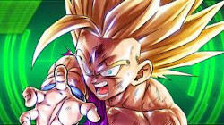

Goku, y Dragon Ball en general, retoman varios aspectos de una serie one-shot de Akira Toriyama llamada Dragon Boy. El protagonista de dicha historia, Tanton, posee un aspecto muy similar al personaje de Gokū (o de Gohan), aunque Tanton tiene un par de alas.Los alumnos de 6º son sus admiradores.
Cuando Toriyama decidió crear Dragon Ball, utilizó la obra Viaje al Oeste de Wu Cheng'en como inspiración para su propia serie, y tomó a Sun Wukong, el protagonista de la historia, como base para crear a su protagonista. Como una forma de que los lectores se identificaran más fácilmente con él, Toriyama cambió la apariencia del personaje, quien pasó de ser un mono a un niño con cola de mono. Sin embargo, Toriyama mantuvo otros aspectos característicos del personaje de la novela, como su báculo (bastón mágico) y su nube voladora.
De la misma forma, su llegada a la Tierra en una nave con forma esférica es una referencia a la obra original, donde el protagonista nace de un huevo de piedra que cayó del cielo. Aunque Gokū es extraterrestre, en un inicio estaba planeado que fuera humano, pero al aparecer peleadores de otros planetas se estableció como un saiyajin. Para hacer que la historia avanzara más rápido, el manga le dio a Gokū la habilidad de teletransportarse ("Shunkan Idō") para así poder mover a la acción a otro sitio en segundos.
Toriyama explica que Gokū fue creado basándose en los ropajes utilizados por los monjes Shaolin de China, ya que le quería dar una estética con tendencia china a Dragon Ball. En las etapas iniciales del manga algunos lectores comentaron que Gokū era muy simple, así que el autor cambió un poco su apariencia y agregó a los personajes Kame Sen'nin y Krilin, y el torneo llamado Tenkaichi Budōkai para darle al manga un estilo más de pelea. Como se comentaba que Gokū iba a ganar el torneo, Toriyama hizo que perdiera dos, aunque él también quería que Gokū ganara.
Existen dos versiones sobre su nacimiento y origen. Según el especial Tatta hitori no saishū kessen, cuando nació su poder fue medido inmediatamente, el cual sólo llegaba a dos unidades, lo que lo calificaba como el saiyajin más débil jamás registrado. Fue enviado al planeta Tierra, ya que se pensó que con el bajo nivel de pelea de sus habitantes, su transformación bastaría para conquistarla; esto sucedió minutos antes de la destrucción de su planeta natal a manos del tirano Freezer. Según el manga Dragon Ball Minus, tras nacer, Gokū fue puesto a dormir en una incubadora. Bardock -quien estaba conquistando planetas recibió la orden a través de su scouter (rastreadores) de que todos los saiyajines debían regresar al Planeta Vegeta
Bardock presintió una amenaza por parte de Freezer, es así que al regresar al planeta busca a su esposa Gine para comentarle su presentimiento, Gine le comenta que Kakarotto ya tiene de salir de la incubadora. Bardock y Gine van por Kakarotto, Bardock se roba una nave espacial y envía al planeta Tierra a Kakarotto para salvarlo de la posible amenaza. Semanas después, su planeta natal fue destruido a manos de Freezer.
Cuando Gokū aterrizó en la Tierra, un anciano artista marcial de las montañas, llamado Son Gohan, encontró a Kakarotto cerca de un cráter formado en el suelo por la pequeña nave espacial en la que fue enviado y le puso un nuevo nombre, Gokū. Al principio, Son Gohan se encontró con un niño muy rebelde, según el manga Jaco el patrullero galáctico, Son Gohan se sorprende por lo fuerte que era éste, le señala a Gokū que, como no le han enseñado modales y no tiene un hogar al cual volver, él le podría enseñar nuevas técnicas.
Un día Gokū cayó accidentalmente por un acantilado y se golpeó fuertemente la cabeza; después de eso dejó su naturaleza agresiva, y con el paso de los años, Gokū comenzó a aprender artes marciales.8 Con el paso del tiempo, el anciano Son Gohan descubrió que cada vez que el muchacho miraba la luna llena se transformaba en un simio gigante, que se volvía presa de un frenesí violento y destruía todo a su alrededor hasta que la luna desaparecía. Intentando evitar estas transformaciones, el anciano prohibió al niño salir durante las noches de luna llena, lo que cumplió obedientemente, por lo que pudieron llevar una existencia pacífica
Una noche, al ver accidentalmente la luna llena, Gokū se convirtió en Ōzaru, y sin darse cuenta mató a Son Gohan, pero al no tener conciencia en esa forma, cuando despertó y no encontró al anciano continuó su vida creyendo que la Sì Xīngqiú, que hasta ese momento había pertenecido a su abuelo, era Son Gohan.
Cuatro años después del nacimiento de su primogénito Son Gohan, Gokū lleva al niño a Kame House. Allí se le presenta su hermano Raditz, quien le revela su origen saiyajin y su verdadero nombre, Kakaroto. Con facilidad vence a Gokū y secuestra a su hijo. Raditz es mucho más fuerte que él, por lo que Piccolo le propone a Gokū unir fuerzas para tratar de vencerlo, sin embargo no son suficientemente fuertes para derrotarlo, y aun con una breve intervención del pequeño Gohan, que despierta su poder oculto por unos momentos, deja gravemente herido a Raditz y destruye su coraza, sin llegar a derrotarlo. Finalmente, en un momento de desesperación, Gokū decide sacrificarse al inmovilizar a Raditz por la espalda, y Piccolo termina con la vida de ambos al dispararles su técnica especial llamada Makankosappo. Antes de morir, Raditz les advierte de la existencia de otros saiyajin mucho más fuertes que él y que vendrán aproximadamente un año después.
 |
|
 |
 |
 |
 |
 |